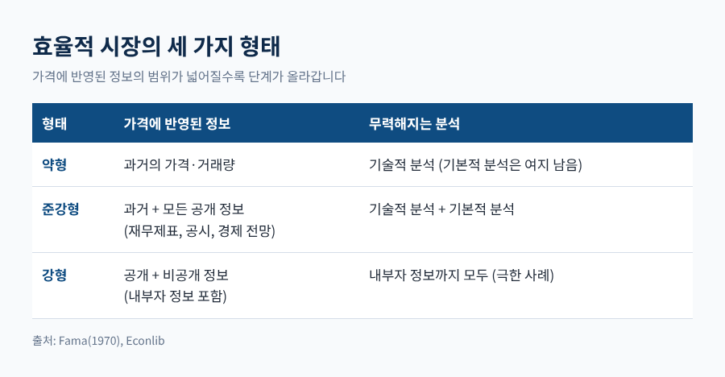
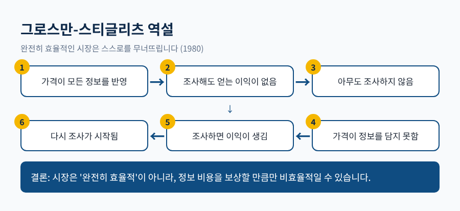
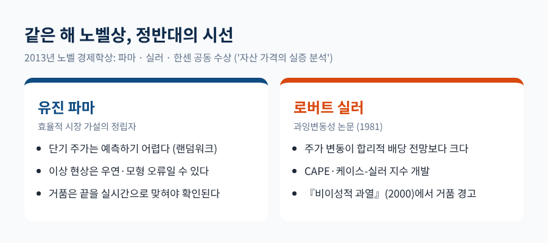
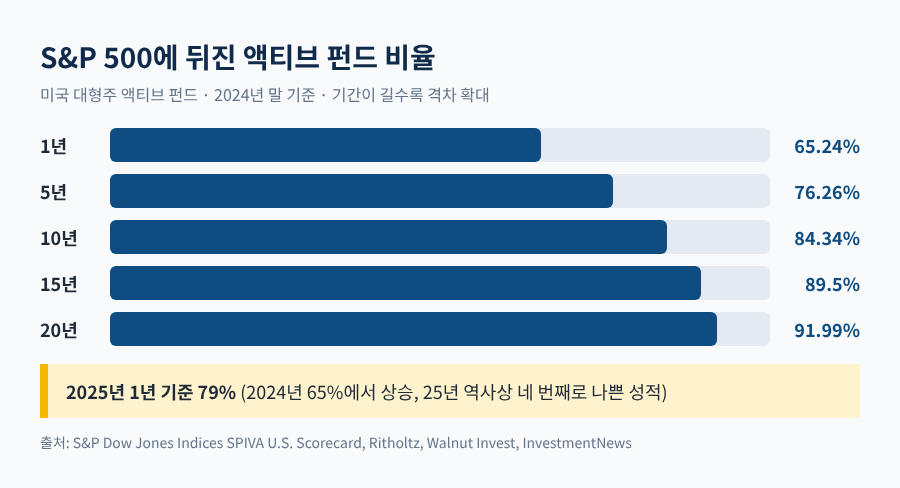
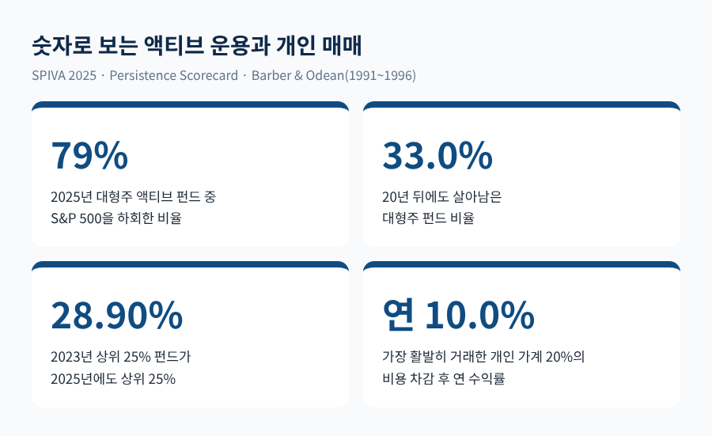

효율적 시장 가설의 세 가지 형태 — 주가는 정말 모든 정보를 반영할까
오늘은 효율적 시장 가설이 무엇을 주장하는지, 그리고 그 주장이 어디까지 버텨 왔는지 정리해 보려 합니다.
가설은 세 가지 형태로 나뉘고, 실러와 행동재무학이 이에 맞섰으며, 액티브 펀드 성적표가 가장 현실적인 증거를 내놓았습니다.
결론부터 말씀드리면, 시장은 대체로 쉽게 이기기 어렵지만 완벽하게 효율적이라고 보기도 어렵습니다.
투자 권유가 아니라 교양으로서의 설명이라는 점을 먼저 밝혀 둡니다.
■ 파마가 정리한 세 가지 형태
효율적 시장 가설은 유진 파마(Eugene Fama)가 1970년 Journal of Finance에 발표한 논문 「Efficient Capital Markets」에서 체계를 갖췄습니다.
핵심 문장은 단순합니다. 가격은 이용 가능한 정보를 이미 반영하고 있다는 것입니다.
다만 '어떤 정보까지'를 기준으로 세 단계가 나뉩니다.
약형은 과거의 가격과 거래량으로는 미래 수익률을 예측할 수 없다는 주장입니다. 차트를 보고 매매하는 기술적 분석이 초과수익을 내지 못한다는 뜻입니다. 다만 기업의 재무를 파고드는 기본적 분석에는 여지가 남습니다.
준강형은 재무제표, 경제 전망, 기업 공시 같은 모든 공개 정보가 가격에 담겨 있다고 봅니다. 이 경우 기술적 분석과 기본적 분석이 모두 힘을 잃습니다.
강형은 비공개 정보까지 반영된다는 가장 강한 주장입니다. 기업 내부자조차 초과수익을 기대할 수 없다는 뜻이어서, 현실의 극한 사례로 취급됩니다.

이 가설의 뿌리는 파마의 1964년 박사논문입니다. 그는 단기 주가 변동이 예측하기 어렵고 랜덤워크에 가깝다고 결론지었습니다.
켄들(1953), 로버츠(1959) 같은 선행 연구도 영국 주간 지수와 다우지수에서 비슷한 독립성을 확인했습니다.
1970년대의 실증 연구 대부분은 준강형을 지지하는 쪽이었습니다.
한 가지 짚어 둘 점이 있습니다. 파마 자신도 효율성을 '있다, 없다'로 보지 않았습니다. 1991년에는 정보 수집과 거래 비용이 낮을수록 시장이 더 효율적이라는, 연속선의 관점을 내놓았습니다.
또 '결합가설 문제'도 있습니다. 시장이 효율적인지는 기대수익률 모형과 묶어서만 검정할 수 있습니다. 실제 수익률이 모형과 다르더라도, 모형이 틀린 것인지 시장이 비효율적인 것인지 가려내기 어렵다는 이야기입니다.
■ 완전히 효율적인 시장은 존재할 수 있을까
가설에는 이론적 모순이 따라붙습니다. 1980년 그로스만(Sanford Grossman)과 스티글리츠(Joseph Stiglitz)가 American Economic Review에 발표한 논문이 이를 짚었습니다.
가격이 이미 모든 정보를 담고 있다면, 비용을 들여 정보를 조사할 이유가 없습니다. 아무도 조사하지 않는다면 가격은 새 정보를 담지 못합니다.
완전한 효율성은 스스로를 무너뜨리는 조건이라는 것입니다.

이 논문이 내놓은 해법은 현실적입니다. 정보를 모으는 비용을 보상할 만큼의 수익이 있어야 하므로, 가격은 내재가치에서 어느 정도 벗어난 채 머물 수 있다는 것입니다.
다시 말해 시장은 '완전히 효율적'이 아니라 '비용을 치를 만큼만 비효율적'인 셈입니다.
이 논리의 따름정리도 흥미롭습니다. 인덱스펀드나 ETF를 쓰는 투자자는, 운용 비용을 내며 가격을 맞춰 주는 이들의 노력을 공짜로 이용하는 구조가 됩니다.
■ 실러의 반론 — 주가는 너무 많이 움직인다
로버트 실러(Robert Shiller)는 1981년 같은 학술지에 「Do Stock Prices Move Too Much to Be Justified by Subsequent Changes in Dividends?」를 실었습니다.
1920년대 이후 미국 주가를 살펴보니, 합리적인 미래 배당 전망만으로는 주가의 출렁임을 설명할 수 없다는 결론이었습니다.
이 논문은 훗날 미국경제학회(AEA)가 100년 역사에서 꼽은 중요 논문 20편에 들었습니다.
실러는 경기조정 주가수익비율(CAPE)과 케이스-실러 주택가격지수도 공동 개발했습니다. 2000년에 낸 『비이성적 과열』은 시장이 정점이던 그해 3월에 주식시장이 거품 상태라고 경고했습니다.
흥미로운 장면은 2013년에 나옵니다. 그해 노벨 경제학상은 '자산 가격의 실증 분석'을 이유로 파마, 실러, 라르스 피터 한센 세 사람에게 돌아갔습니다.
가설을 세운 쪽과 가설을 의심한 쪽이 같은 상을 나눠 받은 것입니다. 실러는 수상 강연에서 파마의 가설에 결함이 있다고 주장했습니다.

파마의 입장도 가볍지 않습니다. 그는 거품이 있었다는 주장은 그 끝을 실시간으로 맞힐 수 있어야 확인된다고 봅니다. 사후에 '거품이었다'고 말하기는 쉽지만, 검증 가능한 주장은 아니라는 지적입니다.
1987년 폭락이나 1990년대 후반 인터넷 거품도 같은 논쟁에 놓여 있습니다. 소수의 경제학자는 두 사건을 효율성과 양립하는 것으로 봅니다. 미첼과 네터(1989)는 1987년 폭락을 세제 개편안과 유동성 공황에 연결했고, 맬킬(2003)은 인터넷 기업의 가치 평가가 애초에 어려웠고 뚜렷한 차익거래 기회도 없었다고 지적했습니다.
■ 행동재무학 — 사람은 합리적이지 않고, 차익거래는 쉽지 않다
실러 이후 행동재무학은 두 갈래로 가설을 공격했습니다.
첫째는 이상 현상의 발견입니다. 소형주가 초과수익을 낸다는 소형주 효과와 1월 효과, 드보트와 탈러(1985)가 확인한 3~5년 단위의 장기 반전, 제가디시와 티트먼(1993)이 보인 3~12개월 모멘텀이 대표적입니다. 오른 종목이 한동안 더 오르는 현상은 '가격이 정보를 즉시 반영한다'는 그림과 맞지 않습니다.
둘째는 심리입니다. 바르베리스(Nicholas Barberis)의 강의 정리에 따르면, 투자자는 최근 수익률을 지나치게 앞으로 연장해 생각하고(외삽), 자신의 정보와 능력을 과신하며, 이익과 손실을 기준점에 비춰 비대칭적으로 받아들입니다(전망이론). 이 세 가지만으로도 과잉변동성, 모멘텀, 장기 반전, 거래량이 폭증하는 거품 같은 현상을 상당 부분 설명할 수 있다는 평가입니다.
그렇다면 비합리적인 투자자가 가격을 흔들 때, 합리적인 투자자가 반대로 거래해 바로잡으면 되지 않을까요. 여기서 '차익거래의 한계'가 등장합니다.
오가격이 교정되기 전에 더 심해질 수 있고(노이즈 트레이더 위험), 그 사이 타인의 돈을 굴리는 운용자는 고객의 환매 요구를, 레버리지를 쓴 투자자는 대출 회수를 맞닥뜨립니다. 거래비용과 공매도 비용도 있습니다. 쉴라이퍼와 비슈니(1997)가 정리한 이 논리는, 오가격이 의외로 오래 남을 수 있는 이유를 설명합니다.
물론 효율시장론 쪽의 재반박도 있습니다. 파마는 1998년 이상 현상이 과소반응과 과잉반응 양쪽으로 나타나므로 우연일 수 있고, 기간이나 방법을 바꾸면 사라지는 경우가 많다고 반박했습니다. 소형주 효과는 유동성에 대한 보상으로 설명하는 시각도 있습니다.
■ 데이터는 무엇을 말하는가 — 액티브 펀드 성적표
이론 논쟁은 끝이 없습니다. 그래서 가장 현실적인 증거는 전문가의 실제 성적입니다.
가장 오래된 기록은 젠슨(1968)의 연구입니다. 1945~1964년 뮤추얼펀드 115개를 분석했더니, 펀드들은 평균적으로 시장을 사서 보유하는 전략을 이길 만큼 가격을 예측하지 못했습니다. 비용을 뺀 평균 성과는 연 약 -1.1%였고, 운용보수를 빼기 전에도 연 약 -0.4%였습니다. 5% 유의수준을 넘은 펀드는 3개에 그쳤습니다. 우연만으로도 5% 안팎은 유의해 보이는 수치입니다.
그로부터 반세기 넘게 지난 지금은 어떨까요. S&P 다우존스 인덱스의 SPIVA 보고서가 해마다 이를 점검합니다.
2025년 말 기준으로 미국 대형주 액티브 펀드의 79%가 S&P 500에 뒤졌습니다. 2024년의 65%에서 더 나빠졌고, 25년 역사에서 네 번째로 나쁜 성적이었습니다.
2024년 말 기준 장기 수치는 더 무겁습니다. S&P 500에 뒤진 대형주 펀드의 비율은 5년 76.26%, 10년 84.34%, 15년 89.5%, 20년 91.99%였습니다. 기간이 길어질수록 격차는 벌어졌습니다.

여기에 생존 문제가 있습니다. 같은 자료에서 20년 뒤까지 살아남은 대형주 펀드는 33.0%였고, 나머지 약 3분의 2는 다른 펀드와 합쳐지거나 문을 닫았습니다. 지금 보이는 성적표는 이미 살아남은 펀드의 것이라는 점을 감안해야 합니다.
잘하는 펀드가 계속 잘하는가를 묻는 SPIVA 지속성 보고서의 답은 더 냉정합니다. 2023년 12월 대형주 상위 25% 펀드 가운데 2025년 12월에도 상위 25%에 남은 비율은 28.90%였습니다. 1년 전 조사의 75.72%에서 크게 떨어진 수치입니다. 2021년 12월의 상위 25% 펀드는 대형주·중형주·멀티캡 모두 4년 뒤 한 곳도 상위권에 남지 않았습니다(0.00%).
개인 투자자의 기록도 있습니다. 바버와 오딘(Barber & Odean)은 대형 할인 중개사의 가계 6만여 곳을 1991년 2월부터 1996년 12월까지 추적했습니다. 평균 가계는 한 해 포트폴리오의 약 80%를 사고팔았고, 비용을 빼기 전 수익은 연 17.7%로 시장(17.1%)과 비슷했지만, 비용을 뺀 뒤에는 15.3%로 내려앉았습니다. 가장 활발하게 거래한 상위 20% 가계는 비용 차감 후 연 10.0%에 그쳤습니다. 저자들은 이를 과신 이론과 연결하며 '거래는 부(富)에 해롭다'고 요약했습니다.

균형을 위해 반대 신호도 적어 두겠습니다. 같은 2025년 SPIVA에서 소형주 펀드는 41%만 뒤졌고, 중형주는 55%였습니다. 3년 구간에서는 대형주 펀드 가운데 상위 절반에 머문 비율이 49.41%로 우연(25%)의 두 배 가까이였습니다. 5년 구간 상위 절반 유지율은 4.49%로 우연 기대치 6.25%에도 못 미쳤습니다. 시장 국면과 기간에 따라 결과가 크게 다르다는 뜻이며, 모든 액티브 운용이 늘 불리하다는 단정은 자료가 뒷받침하지 않습니다.
■ 그래서 주가는 모든 정보를 반영하는가
정리하면 이렇습니다.
단기의 가격 변화는 예측하기 어렵다는 쪽에는 상당한 증거가 쌓여 있습니다. 전문가 다수가 지수에 뒤진다는 기록도 이를 거듭 확인합니다. 이 점에서 효율적 시장 가설은 여전히 '쉽게 이기기 어렵다'는 실용적 경고로 살아 있습니다.
반면 가격이 언제나 가치를 정확히 반영한다는 주장은 이론에서도, 데이터에서도 한계가 보입니다. 그로스만과 스티글리츠가 보였듯 완전한 효율성은 논리적으로 성립하기 어렵고, 실러와 행동재무학이 짚은 변동성과 이상 현상은 아직 깔끔히 해소되지 않았습니다. 파마의 반박처럼 이를 모형의 한계나 우연으로 보는 시각도 남아 있고, 이 논쟁은 같은 해 노벨상을 받은 두 사람 사이에서도 끝나지 않았습니다.
결국 남는 것은 하나입니다. "시장은 이기기 어렵지만, 완벽하지는 않다."
노벨상을 함께 받은 두 학자가 끝내 의견을 좁히지 못했다는 사실이, 이 질문의 난이도를 가장 정직하게 보여 줍니다. 주가가 정말 모든 정보를 반영하느냐고 다시 물으신다면, 저는 '대부분은 그렇지만 전부는 아니다'라고 답하겠습니다.
※ 이 글은 일반 교양 설명이며 특정 상품이나 투자 방법을 권유하지 않습니다.